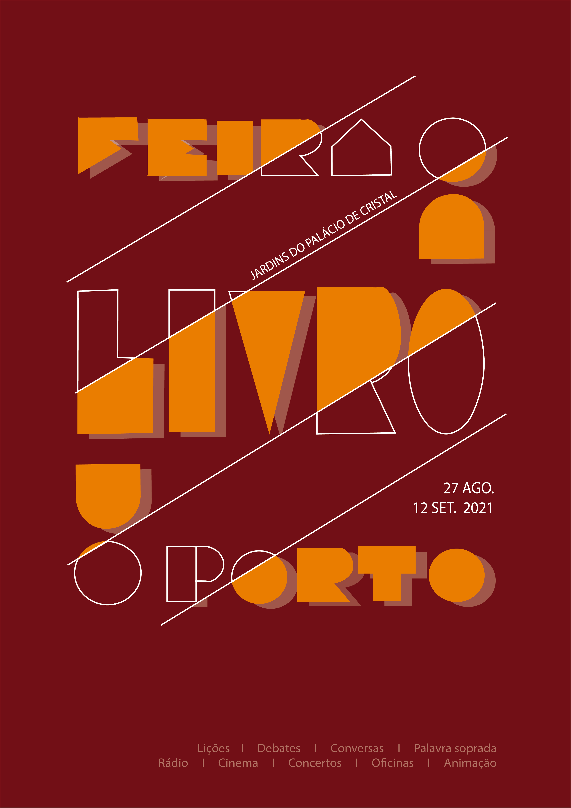

PORTO BOOK FAIR
This project arose in the curricular unit of Communication Design I in the 1st year of the degree, and was based on the creation of a poster to advertise the book fair of that same year.
The creation of this poster was a bit of a challenge because it was the first poster I had ever made.